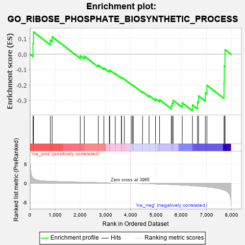
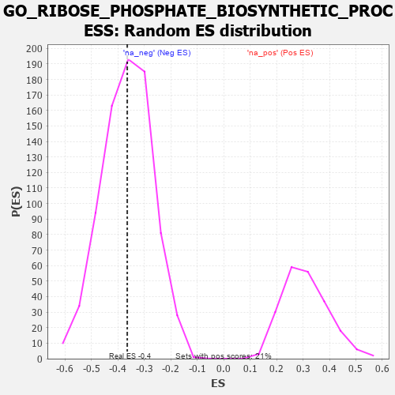

| | | Dataset | 7d |
| Phenotype | NoPhenotypeAvailable |
| Upregulated in class | na_neg |
| GeneSet | GO_RIBOSE_PHOSPHATE_BIOSYNTHETIC_PROCESS |
| Enrichment Score (ES) | -0.36491764 |
| Normalized Enrichment Score (NES) | -0.9987209 |
| Nominal p-value | 0.4904943 |
| FDR q-value | 0.87488514 |
| FWER p-Value | 1.0 |
Table: GSEA Results Summary

Fig 1: Enrichment plot: GO_RIBOSE_PHOSPHATE_BIOSYNTHETIC_PROCESS
Profile of the Running ES Score & Positions of GeneSet Members on the Rank Ordered List
| PROBE | GENE SYMBOL | GENE_TITLE | RANK IN GENE LIST | RANK METRIC SCORE | RUNNING ES | CORE ENRICHMENT | | 1 | ADCY8 | | | 124 | 1.418 | 0.0685 | No |
| 2 | TKT | | | 143 | 1.309 | 0.1439 | No |
| 3 | UCK2 | | | 812 | 0.529 | 0.0911 | No |
| 4 | PYGL | | | 882 | 0.510 | 0.1127 | No |
| 5 | PRPS1 | | | 1997 | 0.305 | -0.0096 | No |
| 6 | TECR | | | 2156 | 0.284 | -0.0126 | No |
| 7 | UCKL1 | | | 2711 | 0.197 | -0.0707 | No |
| 8 | TAZ | | | 2933 | 0.161 | -0.0890 | No |
| 9 | ACLY | | | 3149 | 0.130 | -0.1084 | No |
| 10 | PPCS | | | 3165 | 0.127 | -0.1027 | No |
| 11 | PPAT | | | 3382 | 0.091 | -0.1245 | No |
| 12 | UPP2 | | | 3624 | 0.056 | -0.1515 | No |
| 13 | ACSL4 | | | 3632 | 0.055 | -0.1492 | No |
| 14 | HACD2 | | | 3744 | 0.035 | -0.1611 | No |
| 15 | PARP1 | | | 4014 | -0.010 | -0.1944 | No |
| 16 | AMPD2 | | | 4062 | -0.017 | -0.1993 | No |
| 17 | PDP2 | | | 4098 | -0.023 | -0.2023 | No |
| 18 | GCDH | | | 4463 | -0.087 | -0.2430 | No |
| 19 | COASY | | | 4723 | -0.144 | -0.2671 | No |
| 20 | COX5B | | | 4980 | -0.194 | -0.2879 | No |
| 21 | FLCN | | | 5140 | -0.235 | -0.2940 | No |
| 22 | MPC1 | | | 5603 | -0.345 | -0.3317 | Yes |
| 23 | G6PD | | | 5638 | -0.358 | -0.3147 | Yes |
| 24 | PRPS2 | | | 5679 | -0.370 | -0.2978 | Yes |
| 25 | PPT1 | | | 6038 | -0.485 | -0.3142 | Yes |
| 26 | UMPS | | | 6442 | -0.637 | -0.3272 | Yes |
| 27 | ACSL5 | | | 6643 | -0.737 | -0.3086 | Yes |
| 28 | MPC2 | | | 6683 | -0.753 | -0.2688 | Yes |
| 29 | PANK4 | | | 6953 | -0.907 | -0.2490 | Yes |
| 30 | PANK1 | | | 7016 | -0.948 | -0.2005 | Yes |
| 31 | ADCY1 | | | 7695 | -1.752 | -0.1820 | Yes |
| 32 | ADCY9 | | | 7704 | -1.783 | -0.0772 | Yes |
| 33 | PANK2 | | | 7736 | -1.866 | 0.0296 | Yes |
Table: GSEA details [plain text format]

Fig 2: GO_RIBOSE_PHOSPHATE_BIOSYNTHETIC_PROCESS: Random ES distribution
Gene set null distribution of ES for GO_RIBOSE_PHOSPHATE_BIOSYNTHETIC_PROCESS